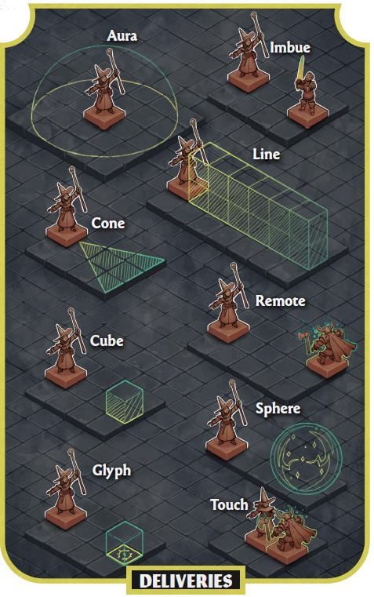

Street Rat
+2 Stealth
+1 Athletics
+1 Perception
a Cyberpunk RED Module
They thought the future would be chrome. They were wrong.
Cyberware reached its limits. It was rigid, visible, and easy to control. Research turned inward, toward the body. Gene editing, adaptive tissue, and neural rewiring turned flesh into something programmable. Then it spread. Leaks and black markets pushed biotech into the streets. Biohackers and illegal clinics made it accessible, unstable, and powerful.
By 3077, biology and technology are no longer separate. Cyberware still exists, but it has been supplanted by bioware. The real edge comes from mutation, bio-protocols, and the ability to survive the strain. Power is no longer what you install. It is what you can endure.
Note: This rulebook is a proof of concept. The mechanics, values, and example numbers shown here are exploratory and should not be treated as fully balanced final rules.
Character Creation
This module does not use traditional Roles as in CPR. Characters are defined by their Background instead. A Background reflects prior experience, training, and social positioning, and grants +2 | +1 | +1 across relevant skills.
Backgrounds are intentionally light-touch. They add flavour and a small mechanical edge without locking players into fixed archetypes.
The backgrounds listed below are examples and can be expanded, remixed, or replaced to suit the campaign.
+2 Stealth
+1 Athletics
+1 Perception
+2 Resist Torture/Drugs
+1 First Aid
+1 Perception
+2 Basic Tech
+1 Electronics/Security Tech
+1 Interface
+2 Interface
+1 Athletics
+1 Concentration
+2 Brawling
+1 Melee Weapon
+1 Intimidation
+2 First Aid
+1 Paramedic
+1 Science (Biology)
+2 Trading
+1 Persuasion
+1 Human Perception
+2 Interface
+1 Electronics/Security Tech
+1 Concentration
+2 Drive Land Vehicle
+1 Athletics
+1 Navigation
+2 Concentration
+1 Persuasion
+1 Human Perception
+2 Science (Biology)
+1 Basic Tech
+1 Electronics/Security Tech
+2 Brawling
+1 Evasion
+1 Athletics
System Changes
Affect and Fatigue are the major additions in this module. Affect handles emotional stability and social integration, while Fatigue tracks how much physical and neural strain a character can push through before collapsing with exhaustion.
(BODY + WILL) x 5
HP measures physical durability and overall survivability.
AFFECT x 10
Humanity measures how well a character remains psychologically integrated under cyber- and bio-augmentation strain.
(BODY + WILL) / 2, rounded down
Fatigue represents exertion, neural strain, and metabolic load. It powers Bio-Protocols and can also be spent to gain positive modifiers, effectively replacing the old Luck stat.
Characters can manipulate their bodies, minds, and surrounding biofields through Mutations: biological alterations driven by internal energy and augmentation.
To use Mutations, a character must have a dedicated gear item: the Bio-Core. Without a Bio-Core, mutation abilities and Bio-Protocols cannot be activated.
Mutations function like x2 skills. Bio-Protocols are specific techniques tied to each Mutation, similar to Martial Arts special moves. Unlike Martial Arts techniques, Bio-Protocols must be acquired through wet markets, narrative instruction, or other in-world access, and each use costs Fatigue Points.
1d10 + INT + SKILL vs DV 15
Tier 1
Basic effects with low cost, typically around 1-2 FP.
Tier 2
Stronger or area-based effects, typically around 3-4 FP.
Tier 3
High-impact powers, action denial, and heavy buffs or debuffs at 5+ FP.
Body manipulation
Mind and nervous system
Field, environment, and organisms
Bio-Protocols are expressed through a delivery system that determines how the mutation reaches a target, occupies space, or persists in the environment.

Effect: 3d6 direct damage
Effect: Target has disadvantage on next roll
Effect: Gain advantage on next roll
Effect: 4d6 direct damage
Effect: Area obscured; targets have disadvantage
Effect: Push targets; disadvantage on next roll
Effect: 3d6 damage over 2 turns; disadvantage
Effect: Target loses next action on failed save
Effect: 5d6 direct damage
Setting Shifts
Netrunning is no longer restricted to a specific Role. All characters can interact with systems using the Interface skill, now tied to TECH. To perform Interface actions, a character still needs a Cyberdeck. Interface is used for both NET Architecture access and QuickHacks.
Instead of installing hardware, bioware rewrites tissue, organs, and genetic expression. Mechanically, though, it still follows standard cyberware rules for installation, effects, and Humanity cost.
Future updates will cover bioware systems, examples, integration strain, and how biological augmentation fits into the wider BioPunk ruleset.